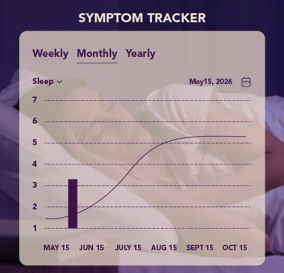

Three minutes today. A clearer year ahead.
No waiting room, no referral, no explaining yourself twice. Here is exactly what happens when you start with Empress — and what Empress will and won't do for you.
Free · 3 minutes · Your report emailed to you
Onboard in about three minutes
Tell us your age, what your cycle is doing, which symptoms are hardest, how long it has been going on, and the one thing you most want to change. Plain questions, in plain language.
- Takes two to three minutes
- Your report is emailed to you, so you always have a copy
- Built specifically for peri- and menopause, not adapted from something else
What has been hardest lately?
Get your snapshot, straight away
Your snapshot estimates where you are in the transition, shows which symptoms tend to travel together, and suggests practical steps for your goal — plus what's worth raising with your doctor. Not generic advice you've read fifty times.
Want the full picture? Your Consult Report turns it into a printable summary for your doctor, included with every membership.
perimenopause
Build momentum, week by week
Track how you slept, how you felt and what you tried. Simple weekly views turn day-to-day noise into patterns — so you can see what's helping, drop what isn't, and celebrate what's changing.
- Weekly trends across sleep, mood, energy and cycle
- Daily check-ins that take under a minute
- Affirmations for the days when the data isn't the point

Your full Health Intelligence assessment
The free snapshot takes three minutes. When you become a member, you can go much deeper: a guided assessment that looks at your whole picture and turns it into the Consult Report you bring to appointments.
- 120 health markers across 10 body systems
- No blood draws — every answer comes from you
- About 15 minutes, and you can stop and come back
- Included with Essential and Premium
your appointment
What Empress is — and isn't
Knowing the limits is part of trusting the guidance.
Empress is
- Evidence-based guidance built for peri- and menopause
- A companion you can ask at 3 a.m., once Ask Empress launches
- Symptom tracking that turns days into patterns
- A way to arrive at appointments prepared
- A curated marketplace for hair, skin and self-care
Empress isn't
- A diagnosis
- A prescription or hormone therapy service
- A replacement for your own clinician
- An emergency service — if symptoms are severe or sudden, call a doctor
Your data, your control
What you tell Empress about your body is some of the most personal information you have. We treat it that way.
- 🔒EncryptedEnterprise-grade encryption protects everything you share.
- ✦Shared only with your consentYour personal health information is never shared without your explicit permission.
Ready when you are.
Start with three minutes. Everything else is optional.
Get my free health assessment →